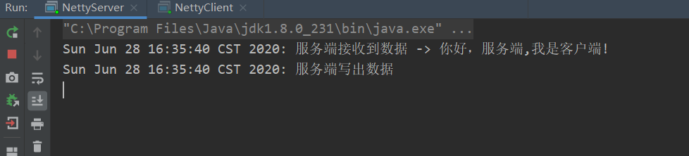
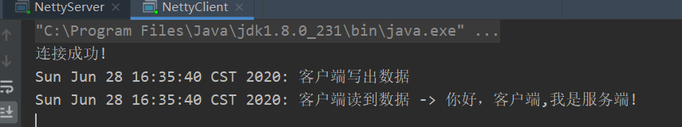
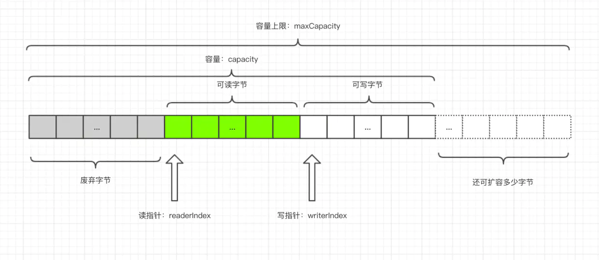
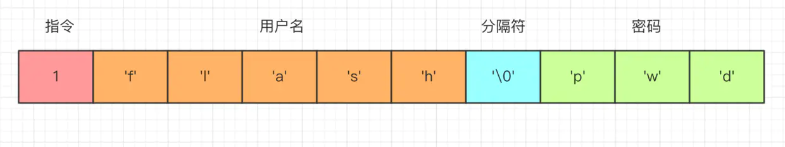
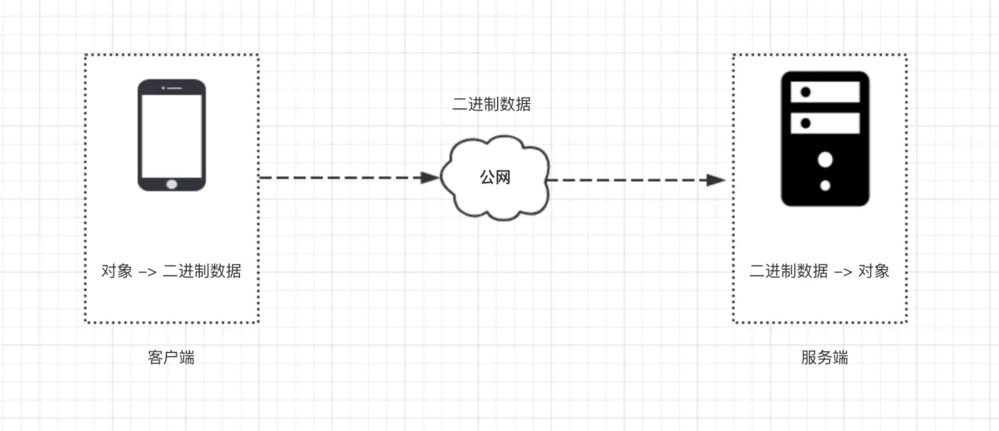
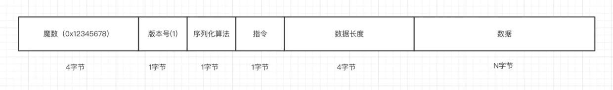

客户端与服务端双向通信,ByteBuf,编解码
本文为掘金小册笔记
实战：客户端与服务端双向通信
在前面两个小节，我们已经学习了服务端启动与客户端启动的流程，熟悉了这两个过程之后，就可以建立服务端与客户端之间的通信了，本小节，我们用一个非常简单的 Demo 来了解一下服务端和客户端是如何来通信的。
本小节，我们要实现的功能是：客户端连接成功之后，向服务端写一段数据 ，服务端收到数据之后打印，并向客户端回一段数据，文章里面展示的是核心代码，完整代码请参考 GitHub
客户端发数据到服务端
在客户端启动流程这一小节，我们提到， 客户端相关的数据读写逻辑是通过 Bootstrap 的 handler() 方法指定
.handler(new ChannelInitializer<SocketChannel>() {
@Override
public void initChannel(SocketChannel ch) {
// 指定连接数据读写逻辑
}
});
现在，我们在 initChannel() 方法里面给客户端添加一个逻辑处理器，这个处理器的作用就是负责向服务端写数据
.handler(new ChannelInitializer<SocketChannel>() {
@Override
public void initChannel(SocketChannel ch) {
ch.pipeline().addLast(new FirstClientHandler());
}
});
ch.pipeline()返回的是和这条连接相关的逻辑处理链，采用了责任链模式，这里不理解没关系，后面会讲到- 然后再调用
addLast()方法 添加一个逻辑处理器，这个逻辑处理器为的就是在客户端建立连接成功之后，向服务端写数据，下面是这个逻辑处理器相关的代码
public class FirstClientHandler extends ChannelInboundHandlerAdapter {
@Override
public void channelActive(ChannelHandlerContext ctx) {
System.out.println(new Date() + ": 客户端写出数据");
// 1. 获取数据
ByteBuf buffer = getByteBuf(ctx);
// 2. 写数据
ctx.channel().writeAndFlush(buffer);
}
private ByteBuf getByteBuf(ChannelHandlerContext ctx) {
// 1. 获取二进制抽象 ByteBuf
ByteBuf buffer = ctx.alloc().buffer();
// 2. 准备数据，指定字符串的字符集为 utf-8
byte[] bytes = "你好，闪电侠!".getBytes(Charset.forName("utf-8"));
// 3. 填充数据到 ByteBuf
buffer.writeBytes(bytes);
return buffer;
}
}
- 这个逻辑处理器继承自 ChannelInboundHandlerAdapter，然后覆盖了 channelActive()方法 ，这个方法会在客户端连接建立成功之后被调用
- 客户端连接建立成功之后，调用到
channelActive()方法，在这个方法里面，我们编写向服务端写数据的逻辑 - 写数据的逻辑分为两步：首先我们需要获取一个 netty 对二进制数据的抽象
ByteBuf，上面代码中,ctx.alloc()获取到一个ByteBuf的内存管理器，这个 内存管理器的作用就是分配一个ByteBuf，然后我们把字符串的二进制数据填充到ByteBuf，这样我们就获取到了 Netty 需要的一个数据格式，最后我们调用ctx.channel().writeAndFlush()把数据写到服务端
以上就是客户端启动之后，向服务端写数据的逻辑，我们可以看到，和传统的 socket 编程不同的是，Netty 里面数据是以 ByteBuf 为单位的， 所有需要写出的数据都必须塞到一个 ByteBuf，数据的写出是如此，数据的读取亦是如此，接下来我们就来看一下服务端是如何读取到这段数据的。
服务端读取客户端数据
在服务端端启动流程这一小节，我们提到， 服务端相关的数据处理逻辑是通过 ServerBootstrap 的 childHandler() 方法指定
.childHandler(new ChannelInitializer<NioSocketChannel>() {
protected void initChannel(NioSocketChannel ch) {
// 指定连接数据读写逻辑
}
});
现在，我们在 initChannel() 方法里面给服务端添加一个逻辑处理器，这个处理器的作用就是负责读取客户端来的数据
.childHandler(new ChannelInitializer<NioSocketChannel>() {
protected void initChannel(NioSocketChannel ch) {
ch.pipeline().addLast(new FirstServerHandler());
}
});
这个方法里面的逻辑和客户端侧类似，获取服务端侧关于这条连接的逻辑处理链 pipeline，然后添加一个逻辑处理器，负责读取客户端发来的数据
public class FirstServerHandler extends ChannelInboundHandlerAdapter {
@Override
public void channelRead(ChannelHandlerContext ctx, Object msg) {
ByteBuf byteBuf = (ByteBuf) msg;
System.out.println(new Date() + ": 服务端读到数据 -> " + byteBuf.toString(Charset.forName("utf-8")));
}
}
服务端侧的逻辑处理器同样继承自 ChannelInboundHandlerAdapter，与客户端不同的是，这里覆盖的方法是 channelRead()，这个方法在接收到客户端发来的数据之后被回调。
这里的 msg 参数指的就是 Netty 里面数据读写的载体，为什么这里不直接是 ByteBuf，而需要我们强转一下，我们后面会分析到。这里我们强转之后，然后调用 byteBuf.toString() 就能够拿到我们客户端发过来的字符串数据。
我们先运行服务端，再运行客户端，下面分别是服务端控制台和客户端控制台的输出
服务端回数据给客户端
服务端向客户端写数据逻辑与客户端侧的写数据逻辑一样，先创建一个 ByteBuf，然后填充二进制数据，最后调用 writeAndFlush() 方法写出去，下面是服务端回数据的代码
public class FirstServerHandler extends ChannelInboundHandlerAdapter {
@Override
public void channelRead(ChannelHandlerContext ctx, Object msg) {
// ... 收数据逻辑省略
// 回复数据到客户端
System.out.println(new Date() + ": 服务端写出数据");
ByteBuf out = getByteBuf(ctx);
ctx.channel().writeAndFlush(out);
}
private ByteBuf getByteBuf(ChannelHandlerContext ctx) {
byte[] bytes = "你好，欢迎关注我的微信公众号，《闪电侠的博客》!".getBytes(Charset.forName("utf-8"));
ByteBuf buffer = ctx.alloc().buffer();
buffer.writeBytes(bytes);
return buffer;
}
}
现在，轮到客户端了。客户端的读取数据的逻辑和服务端读取数据的逻辑一样，同样是覆盖 ChannelRead() 方法
public class FirstClientHandler extends ChannelInboundHandlerAdapter {
// 写数据相关的逻辑省略
@Override
public void channelRead(ChannelHandlerContext ctx, Object msg) {
ByteBuf byteBuf = (ByteBuf) msg;
System.out.println(new Date() + ": 客户端读到数据 -> " + byteBuf.toString(Charset.forName("utf-8")));
}
}
将这段逻辑添加到客户端之后逻辑处理器 FirstClientHandler 之后，客户端就能收到服务端发来的数据，完整的代码参考 GitHub
客户端与服务端的读写数据的逻辑完成之后，我们先运行服务端，再运行客户端，控制台输出如下


到这里，我们本小节要实现的客户端与服务端双向通信的功能实现完毕，最后，我们对本小节做一个总结。
总结
- 本文中，我们了解到客户端和服务端的逻辑处理是均是在启动的时候，通过给逻辑处理链
pipeline添加逻辑处理器，来编写数据的读写逻辑，pipeline的逻辑我们在后面会分析。 - 接下来，我们学到，在客户端连接成功之后会回调到逻辑处理器的 channelActive() 方法，而不管是服务端还是客户端，收到数据之后都会调用到 channelRead 方法。
- 写数据调用
writeAndFlush方法，客户端与服务端交互的二进制数据载体为ByteBuf，ByteBuf通过连接的内存管理器创建，字节数据填充到ByteBuf之后才能写到对端，接下来一小节，我们就来重点分析ByteBuf。
数据传输载体 ByteBuf 介绍
在前面一小节，我们已经了解到 Netty 里面数据读写是以 ByteBuf 为单位进行交互的，这一小节，我们就来详细剖析一下 ByteBuf
ByteBuf结构
首先，我们先来了解一下 ByteBuf 的结构

以上就是一个 ByteBuf 的结构图，从上面这幅图可以看到
- ByteBuf 是一个字节容器，容器里面的的数据分为三个部分，第一个部分是已经丢弃的字节，这部分数据是无效的；第二部分是可读字节，这部分数据是 ByteBuf 的主体数据， 从 ByteBuf 里面读取的数据都来自这一部分;最后一部分的数据是可写字节，所有写到 ByteBuf 的数据都会写到这一段。最后一部分虚线表示的是该 ByteBuf 最多还能扩容多少容量
- 以上三段内容是被两个指针给划分出来的，从左到右，依次是读指针（readerIndex）、写指针（writerIndex），然后还有一个变量 capacity，表示 ByteBuf 底层内存的总容量
- 从 ByteBuf 中每读取一个字节，readerIndex 自增1，ByteBuf 里面总共有 writerIndex-readerIndex 个字节可读, 由此可以推论出当 readerIndex 与 writerIndex 相等的时候，ByteBuf 不可读
- 写数据是从 writerIndex 指向的部分开始写，每写一个字节，writerIndex 自增1，直到增到 capacity，这个时候，表示 ByteBuf 已经不可写了
- ByteBuf 里面其实还有一个参数 maxCapacity，当向 ByteBuf 写数据的时候，如果容量不足，那么这个时候可以进行扩容，直到 capacity 扩容到 maxCapacity，超过 maxCapacity 就会报错
Netty 使用 ByteBuf 这个数据结构可以有效地区分可读数据和可写数据，读写之间相互没有冲突，当然，ByteBuf 只是对二进制数据的抽象，具体底层的实现我们在下面的小节会讲到，在这一小节，我们 只需要知道 Netty 关于数据读写只认 ByteBuf，下面，我们就来学习一下 ByteBuf 常用的 API
容量 API
capacity()
表示 ByteBuf 底层占用了多少字节的内存（包括丢弃的字节、可读字节、可写字节），不同的底层实现机制有不同的计算方式，后面我们讲 ByteBuf 的分类的时候会讲到
maxCapacity()
表示 ByteBuf 底层最大能够占用多少字节的内存，当向 ByteBuf 中写数据的时候，如果发现容量不足，则进行扩容，直到扩容到 maxCapacity，超过这个数，就抛异常
readableBytes() 与 isReadable()
readableBytes() 表示 ByteBuf 当前可读的字节数，它的值等于 writerIndex-readerIndex，如果两者相等，则不可读，isReadable() 方法返回 false
writableBytes()、 isWritable() 与 maxWritableBytes()
writableBytes() 表示 ByteBuf 当前可写的字节数，它的值等于 capacity-writerIndex，如果两者相等，则表示不可写，isWritable() 返回 false，但是这个时候，并不代表不能往 ByteBuf 中写数据了， 如果发现往 ByteBuf 中写数据写不进去的话，Netty 会自动扩容 ByteBuf，直到扩容到底层的内存大小为 maxCapacity，而 maxWritableBytes() 就表示可写的最大字节数，它的值等于 maxCapacity-writerIndex
读写指针相关的 API
readerIndex() 与 readerIndex(int)
前者表示返回当前的读指针 readerIndex, 后者表示设置读指针
writeIndex() 与 writeIndex(int)
前者表示返回当前的写指针 writerIndex, 后者表示设置写指针
markReaderIndex() 与 resetReaderIndex()
前者表示把当前的读指针保存起来，后者表示把当前的读指针恢复到之前保存的值，下面两段代码是等价的
// 代码片段1
int readerIndex = buffer.readerIndex();
// .. 其他操作
buffer.readerIndex(readerIndex);
// 代码片段二
buffer.markReaderIndex();
// .. 其他操作
buffer.resetReaderIndex();
希望大家多多使用代码片段二这种方式，不需要自己定义变量，无论 buffer 当作参数传递到哪里，调用 resetReaderIndex() 都可以恢复到之前的状态，在解析自定义协议的数据包的时候非常常见，推荐大家使用这一对 API
markWriterIndex() 与 resetWriterIndex()
这一对 API 的作用与上述一对 API 类似，这里不再 赘述
读写 API
本质上，关于 ByteBuf 的读写都可以看作从指针开始的地方开始读写数据
writeBytes(byte[] src) 与 buffer.readBytes(byte[] dst)
writeBytes() 表示把字节数组 src 里面的数据全部写到 ByteBuf，而 readBytes() 指的是把 ByteBuf 里面的数据全部读取到 dst，这里 dst 字节数组的大小通常等于 readableBytes()，而 src 字节数组大小的长度通常小于等于 writableBytes()
writeByte(byte b) 与 buffer.readByte()
writeByte() 表示往 ByteBuf 中写一个字节，而 buffer.readByte() 表示从 ByteBuf 中读取一个字节，类似的 API 还有 writeBoolean()、writeChar()、writeShort()、writeInt()、writeLong()、writeFloat()、writeDouble() 与 readBoolean()、readChar()、readShort()、readInt()、readLong()、readFloat()、readDouble() 这里就不一一赘述了，相信读者应该很容易理解这些 API
与读写 API 类似的 API 还有 getBytes、getByte() 与 setBytes()、setByte() 系列，唯一的区别就是 get/set 不会改变读写指针，而 read/write 会改变读写指针，这点在解析数据的时候千万要注意
release() 与 retain()
由于 Netty 使用了堆外内存，而堆外内存是不被 jvm 直接管理的，也就是说申请到的内存无法被垃圾回收器直接回收，所以需要我们手动回收。有点类似于c语言里面，申请到的内存必须手工释放，否则会造成内存泄漏。
Netty 的 ByteBuf 是通过引用计数的方式管理的，如果一个 ByteBuf 没有地方被引用到，需要回收底层内存。默认情况下，当创建完一个 ByteBuf，它的引用为1，然后每次调用 retain() 方法， 它的引用就加一， release() 方法原理是将引用计数减一，减完之后如果发现引用计数为0，则直接回收 ByteBuf 底层的内存。
slice()、duplicate()、copy()
这三个方法通常情况会放到一起比较，这三者的返回值都是一个新的 ByteBuf 对象
- slice() 方法从原始 ByteBuf 中截取一段，这段数据是从 readerIndex 到 writeIndex，同时，返回的新的 ByteBuf 的最大容量 maxCapacity 为原始 ByteBuf 的 readableBytes()
- duplicate() 方法把整个 ByteBuf 都截取出来，包括所有的数据，指针信息
- slice() 方法与 duplicate() 方法的相同点是：底层内存以及引用计数与原始的 ByteBuf 共享，也就是说经过 slice() 或者 duplicate() 返回的 ByteBuf 调用 write 系列方法都会影响到 原始的 ByteBuf，但是它们都维持着与原始 ByteBuf 相同的内存引用计数和不同的读写指针
- slice() 方法与 duplicate() 不同点就是：slice() 只截取从 readerIndex 到 writerIndex 之间的数据，它返回的 ByteBuf 的最大容量被限制到 原始 ByteBuf 的 readableBytes(), 而 duplicate() 是把整个 ByteBuf 都与原始的 ByteBuf 共享
- slice() 方法与 duplicate() 方法不会拷贝数据，它们只是通过改变读写指针来改变读写的行为，而最后一个方法 copy() 会直接从原始的 ByteBuf 中拷贝所有的信息，包括读写指针以及底层对应的数据，因此，往 copy() 返回的 ByteBuf 中写数据不会影响到原始的 ByteBuf
- slice() 和 duplicate() 不会改变 ByteBuf 的引用计数，所以原始的 ByteBuf 调用 release() 之后发现引用计数为零，就开始释放内存，调用这两个方法返回的 ByteBuf 也会被释放，这个时候如果再对它们进行读写，就会报错。因此，我们可以通过调用一次 retain() 方法 来增加引用，表示它们对应的底层的内存多了一次引用，引用计数为2，在释放内存的时候，需要调用两次 release() 方法，将引用计数降到零，才会释放内存
- 这三个方法均维护着自己的读写指针，与原始的 ByteBuf 的读写指针无关，相互之间不受影响
retainedSlice() 与 retainedDuplicate()
相信读者应该已经猜到这两个 API 的作用了，它们的作用是在截取内存片段的同时，增加内存的引用计数，分别与下面两段代码等价
// retainedSlice 等价于
slice().retain();
// retainedDuplicate() 等价于
duplicate().retain()
使用到 slice 和 duplicate 方法的时候，千万要理清 内存共享，引用计数共享，读写指针不共享 这几个概念，下面举两个常见的易犯错的例子
- 多次释放
Buffer buffer = xxx;
doWith(buffer);
// 一次释放
buffer.release();
public void doWith(Bytebuf buffer) {
// ...
// 没有增加引用计数
Buffer slice = buffer.slice();
foo(slice);
}
public void foo(ByteBuf buffer) {
// read from buffer
// 重复释放
buffer.release();
}
这里的 doWith 有的时候是用户自定义的方法，有的时候是 Netty 的回调方法，比如 channelRead() 等等
- 不释放造成内存泄漏
Buffer buffer = xxx;
doWith(buffer);
// 引用计数为2，调用 release 方法之后，引用计数为1，无法释放内存
buffer.release();
public void doWith(Bytebuf buffer) {
// ...
// 增加引用计数
Buffer slice = buffer.retainedSlice();
foo(slice);
// 没有调用 release
}
public void foo(ByteBuf buffer) {
// read from buffer
}
想要避免以上两种情况发生，大家只需要记得一点，在一个函数体里面，只要增加了引用计数（包括 ByteBuf 的创建和手动调用 retain() 方法），就必须调用 release() 方法
实战
了解了以上 API 之后，最后我们使用上述 API 来 写一个简单的 demo
ByteBufTest.java
public class ByteBufTest {
public static void main(String[] args) {
ByteBuf buffer = ByteBufAllocator.DEFAULT.buffer(9, 100);
print("allocate ByteBuf(9, 100)", buffer);
// write 方法改变写指针，写完之后写指针未到 capacity 的时候，buffer 仍然可写
buffer.writeBytes(new byte[]{1, 2, 3, 4});
print("writeBytes(1,2,3,4)", buffer);
// write 方法改变写指针，写完之后写指针未到 capacity 的时候，buffer 仍然可写, 写完 int 类型之后，写指针增加4
buffer.writeInt(12);
print("writeInt(12)", buffer);
// write 方法改变写指针, 写完之后写指针等于 capacity 的时候，buffer 不可写
buffer.writeBytes(new byte[]{5});
print("writeBytes(5)", buffer);
// write 方法改变写指针，写的时候发现 buffer 不可写则开始扩容，扩容之后 capacity 随即改变
buffer.writeBytes(new byte[]{6});
print("writeBytes(6)", buffer);
// get 方法不改变读写指针
System.out.println("getByte(3) return: " + buffer.getByte(3));
System.out.println("getShort(3) return: " + buffer.getShort(3));
System.out.println("getInt(3) return: " + buffer.getInt(3));
print("getByte()", buffer);
// set 方法不改变读写指针
buffer.setByte(buffer.readableBytes() + 1, 0);
print("setByte()", buffer);
// read 方法改变读指针
byte[] dst = new byte[buffer.readableBytes()];
buffer.readBytes(dst);
print("readBytes(" + dst.length + ")", buffer);
}
private static void print(String action, ByteBuf buffer) {
System.out.println("after ===========" + action + "============");
System.out.println("capacity(): " + buffer.capacity());
System.out.println("maxCapacity(): " + buffer.maxCapacity());
System.out.println("readerIndex(): " + buffer.readerIndex());
System.out.println("readableBytes(): " + buffer.readableBytes());
System.out.println("isReadable(): " + buffer.isReadable());
System.out.println("writerIndex(): " + buffer.writerIndex());
System.out.println("writableBytes(): " + buffer.writableBytes());
System.out.println("isWritable(): " + buffer.isWritable());
System.out.println("maxWritableBytes(): " + buffer.maxWritableBytes());
System.out.println();
}
}
最后，控制台输出
after ===========allocate ByteBuf(9, 100)============
capacity(): 9
maxCapacity(): 100
readerIndex(): 0
readableBytes(): 0
isReadable(): false
writerIndex(): 0
writableBytes(): 9
isWritable(): true
maxWritableBytes(): 100
after ===========writeBytes(1,2,3,4)============
capacity(): 9
maxCapacity(): 100
readerIndex(): 0
readableBytes(): 4
isReadable(): true
writerIndex(): 4
writableBytes(): 5
isWritable(): true
maxWritableBytes(): 96
after ===========writeInt(12)============
capacity(): 9
maxCapacity(): 100
readerIndex(): 0
readableBytes(): 8
isReadable(): true
writerIndex(): 8
writableBytes(): 1
isWritable(): true
maxWritableBytes(): 92
after ===========writeBytes(5)============
capacity(): 9
maxCapacity(): 100
readerIndex(): 0
readableBytes(): 9
isReadable(): true
writerIndex(): 9
writableBytes(): 0
isWritable(): false
maxWritableBytes(): 91
after ===========writeBytes(6)============
capacity(): 64
maxCapacity(): 100
readerIndex(): 0
readableBytes(): 10
isReadable(): true
writerIndex(): 10
writableBytes(): 54
isWritable(): true
maxWritableBytes(): 90
getByte(3) return: 4
getShort(3) return: 1024
getInt(3) return: 67108864
after ===========getByte()============
capacity(): 64
maxCapacity(): 100
readerIndex(): 0
readableBytes(): 10
isReadable(): true
writerIndex(): 10
writableBytes(): 54
isWritable(): true
maxWritableBytes(): 90
after ===========setByte()============
capacity(): 64
maxCapacity(): 100
readerIndex(): 0
readableBytes(): 10
isReadable(): true
writerIndex(): 10
writableBytes(): 54
isWritable(): true
maxWritableBytes(): 90
after ===========readBytes(10)============
capacity(): 64
maxCapacity(): 100
readerIndex(): 10
readableBytes(): 0
isReadable(): false
writerIndex(): 10
writableBytes(): 54
isWritable(): true
maxWritableBytes(): 90
完整代码已放置 github
相信大家在了解了 ByteBuf 的结构之后，不难理解控制台的输出
总结
- 本小节，我们分析了 Netty 对二进制数据的抽象 ByteBuf 的结构，本质上它的原理就是，它引用了一段内存，这段内存可以是堆内也可以是堆外的，然后用引用计数来控制这段内存是否需要被释放，使用读写指针来控制对 ByteBuf 的读写，可以理解为是外观模式的一种使用
- 基于读写指针和容量、最大可扩容容量，衍生出一系列的读写方法，要注意 read/write 与 get/set 的区别
- 多个 ByteBuf 可以引用同一段内存，通过引用计数来控制内存的释放，遵循谁 retain() 谁 release() 的原则
- 最后，我们通过一个具体的例子说明 ByteBuf 的实际使用
客户端与服务端通信协议编解码
什么是服务端与客户端的通信协议
无论是使用 Netty 还是原始的 Socket 编程，基于 TCP 通信的数据包格式均为二进制，协议指的就是客户端与服务端事先商量好的，每一个二进制数据包中每一段字节分别代表什么含义的规则。如下图的一个简单的登录指令

在这个数据包中，第一个字节为 1 表示这是一个登录指令，接下来是用户名和密码，这两个值以 \0 分割，客户端发送这段二进制数据包到服务端，服务端就能根据这个协议来取出用户名密码，进行登录逻辑。实际的通信协议设计中，我们会考虑更多细节，要比这个稍微复杂一些。
那么，协议设计好之后，客户端与服务端的通信过程又是怎样的呢？

如上图所示，客户端与服务端通信
- 首先，客户端把一个 Java 对象按照通信协议转换成二进制数据包。
- 然后通过网络，把这段二进制数据包发送到服务端，数据的传输过程由 TCP/IP 协议负责数据的传输，与我们的应用层无关。
- 服务端接受到数据之后，按照协议取出二进制数据包中的相应字段，包装成 Java 对象，交给应用逻辑处理。
- 服务端处理完之后，如果需要吐出响应给客户端，那么按照相同的流程进行。
在本小册子的第一节中，我们已经列出了实现一个支持单聊和群聊的 IM 的指令集合，我们设计协议的目的就是为了客户端与服务端能够识别出这些具体的指令。 接下来，我们就来看一下如何设计这个通信协议。
通信协议的设计

- 首先，第一个字段是魔数，通常情况下为固定的几个字节（我们这边规定为4个字节）。 为什么需要这个字段，而且还是一个固定的数？假设我们在服务器上开了一个端口，比如 80 端口，如果没有这个魔数，任何数据包传递到服务器，服务器都会根据自定义协议来进行处理，包括不符合自定义协议规范的数据包。例如，我们直接通过
http://服务器ip来访问服务器（默认为 80 端口）， 服务端收到的是一个标准的 HTTP 协议数据包，但是它仍然会按照事先约定好的协议来处理 HTTP 协议，显然，这是会解析出错的。而有了这个魔数之后，服务端首先取出前面四个字节进行比对，能够在第一时间识别出这个数据包并非是遵循自定义协议的，也就是无效数据包，为了安全考虑可以直接关闭连接以节省资源。在 Java 的字节码的二进制文件中，开头的 4 个字节为0xcafebabe用来标识这是个字节码文件，亦是异曲同工之妙。 - 接下来一个字节为版本号，通常情况下是预留字段，用于协议升级的时候用到，有点类似 TCP 协议中的一个字段标识是 IPV4 协议还是 IPV6 协议，大多数情况下，这个字段是用不到的，不过为了协议能够支持升级，我们还是先留着。
- 第三部分，序列化算法表示如何把 Java 对象转换二进制数据以及二进制数据如何转换回 Java 对象，比如 Java 自带的序列化，json，hessian 等序列化方式。
- 第四部分的字段表示指令，关于指令相关的介绍，我们在前面已经讨论过，服务端或者客户端每收到一种指令都会有相应的处理逻辑，这里，我们用一个字节来表示，最高支持256种指令，对于我们这个 IM 系统来说已经完全足够了。
- 接下来的字段为数据部分的长度，占四个字节。
- 最后一个部分为数据内容，每一种指令对应的数据是不一样的，比如登录的时候需要用户名密码，收消息的时候需要用户标识和具体消息内容等等。
通常情况下，这样一套标准的协议能够适配大多数情况下的服务端与客户端的通信场景，接下来我们就来看一下我们如何使用 Netty 来实现这套协议。
通信协议的实现
我们把 Java 对象根据协议封装成二进制数据包的过程成为编码，而把从二进制数据包中解析出 Java 对象的过程成为解码，在学习如何使用 Netty 进行通信协议的编解码之前，我们先来定义一下客户端与服务端通信的 Java 对象。
Java 对象
我们如下定义通信过程中的 Java 对象
@Data
public abstract class Packet {
/**
* 协议版本
*/
private Byte version = 1;
/**
* 指令
* /
public abstract Byte getCommand();
}
- 以上是通信过程中 Java 对象的抽象类，可以看到，我们定义了一个版本号（默认值为 1 ）以及一个获取指令的抽象方法，所有的指令数据包都必须实现这个方法，这样我们就可以知道某种指令的含义。
@Data注解由 lombok 提供，它会自动帮我们生产 getter/setter 方法，减少大量重复代码，推荐使用。
接下来，我们拿客户端登录请求为例，定义登录请求数据包
public interface Command {
Byte LOGIN_REQUEST = 1;
}
@Data
public class LoginRequestPacket extends Packet {
private Integer userId;
private String username;
private String password;
@Override
public Byte getCommand() {
return LOGIN_REQUEST;
}
}
登录请求数据包继承自 Packet，然后定义了三个字段，分别是用户 ID，用户名，密码，这里最为重要的就是覆盖了父类的 getCommand() 方法，值为常量 LOGIN_REQUEST。
Java 对象定义完成之后，接下来我们就需要定义一种规则，如何把一个 Java 对象转换成二进制数据，这个规则叫做 Java 对象的序列化。
序列化
我们如下定义序列化接口
public interface Serializer {
/**
* 序列化算法
*/
byte getSerializerAlgorithm();
/**
* java 对象转换成二进制
*/
byte[] serialize(Object object);
/**
* 二进制转换成 java 对象
*/
<T> T deserialize(Class<T> clazz, byte[] bytes);
}
序列化接口有三个方法，getSerializerAlgorithm() 获取具体的序列化算法标识，serialize() 将 Java 对象转换成字节数组，deserialize() 将字节数组转换成某种类型的 Java 对象，在本小册中，我们使用最简单的 json 序列化方式，使用阿里巴巴的 fastjson 作为序列化框架。
public interface SerializerAlgorithm {
/**
* json 序列化标识
*/
byte JSON = 1;
}
public class JSONSerializer implements Serializer {
@Override
public byte getSerializerAlgorithm() {
return SerializerAlgorithm.JSON;
}
@Override
public byte[] serialize(Object object) {
return JSON.toJSONBytes(object);
}
@Override
public <T> T deserialize(Class<T> clazz, byte[] bytes) {
return JSON.parseObject(bytes, clazz);
}
}
然后，我们定义一下序列化算法的类型以及默认序列化算法
public interface Serializer {
/**
* json 序列化
*/
byte JSON_SERIALIZER = 1;
Serializer DEFAULT = new JSONSerializer();
// ...
}
这样，我们就实现了序列化相关的逻辑，如果想要实现其他序列化算法的话，只需要继承一下 Serializer，然后定义一下序列化算法的标识，再覆盖一下两个方法即可。
序列化定义了 Java 对象与二进制数据的互转过程，接下来，我们就来学习一下，如何把这部分的数据编码到通信协议的二进制数据包中去。
编码：封装成二进制的过程
PacketCodeC.java
private static final int MAGIC_NUMBER = 0x12345678;
public ByteBuf encode(Packet packet) {
// 1. 创建 ByteBuf 对象
ByteBuf byteBuf = ByteBufAllocator.DEFAULT.ioBuffer();
// 2. 序列化 Java 对象
byte[] bytes = Serializer.DEFAULT.serialize(packet);
// 3. 实际编码过程
byteBuf.writeInt(MAGIC_NUMBER);
byteBuf.writeByte(packet.getVersion());
byteBuf.writeByte(Serializer.DEFAULT.getSerializerAlgorithm());
byteBuf.writeByte(packet.getCommand());
byteBuf.writeInt(bytes.length);
byteBuf.writeBytes(bytes);
return byteBuf;
}
编码过程分为三个过程
- 首先，我们需要创建一个 ByteBuf，这里我们调用 Netty 的 ByteBuf 分配器来创建，
ioBuffer()方法会返回适配 io 读写相关的内存，它会尽可能创建一个直接内存，直接内存可以理解为不受 jvm 堆管理的内存空间，写到 IO 缓冲区的效果更高。 - 接下来，我们将 Java 对象序列化成二进制数据包。
- 最后，我们对照本小节开头协议的设计以及上一小节 ByteBuf 的 API，逐个往 ByteBuf 写入字段，即实现了编码过程，到此，编码过程结束。
一端实现了编码之后，Netty 会将此 ByteBuf 写到另外一端，另外一端拿到的也是一个 ByteBuf 对象，基于这个 ByteBuf 对象，就可以反解出在对端创建的 Java 对象，这个过程我们称作为解码，下面，我们就来分析一下这个过程。
解码：解析 Java 对象的过程
PacketCodeC.java
public Packet decode(ByteBuf byteBuf) {
// 跳过 magic number
byteBuf.skipBytes(4);
// 跳过版本号
byteBuf.skipBytes(1);
// 序列化算法标识
byte serializeAlgorithm = byteBuf.readByte();
// 指令
byte command = byteBuf.readByte();
// 数据包长度
int length = byteBuf.readInt();
byte[] bytes = new byte[length];
byteBuf.readBytes(bytes);
Class<? extends Packet> requestType = getRequestType(command);
Serializer serializer = getSerializer(serializeAlgorithm);
if (requestType != null && serializer != null) {
return serializer.deserialize(requestType, bytes);
}
return null;
}
解码的流程如下：
- 我们假定
decode方法传递进来的ByteBuf已经是合法的（在后面小节我们再来实现校验），即首四个字节是我们前面定义的魔数0x12345678，这里我们调用skipBytes跳过这四个字节。 - 这里，我们暂时不关注协议版本，通常我们在没有遇到协议升级的时候，这个字段暂时不处理，因为，你会发现，绝大多数情况下，这个字段几乎用不着，但我们仍然需要暂时留着。
- 接下来，我们调用
ByteBuf的 API 分别拿到序列化算法标识、指令、数据包的长度。 - 最后，我们根据拿到的数据包的长度取出数据，通过指令拿到该数据包对应的 Java 对象的类型，根据序列化算法标识拿到序列化对象，将字节数组转换为 Java 对象，至此，解码过程结束。
可以看到，解码过程与编码过程正好是一个相反的过程。
总结
本小节，我们学到了如下几个知识点
- 通信协议是为了服务端与客户端交互，双方协商出来的满足一定规则的二进制数据格式。
- 介绍了一种通用的通信协议的设计，包括魔数、版本号、序列化算法标识、指令、数据长度、数据几个字段，该协议能够满足绝大多数的通信场景。
- Java 对象以及序列化，目的就是实现 Java 对象与二进制数据的互转。
- 最后，我们依照我们设计的协议以及 ByteBuf 的 API 实现了通信协议，这个过程称为编解码过程。
本小节完整代码参考 github， 其中
PacketCodeCTest.java对编解码过程的测试用例，大家可以下载下来跑一跑。
This blog is under a CC BY-NC-SA 3.0 Unported License
本文链接：http://hogwartsrico.github.io/2020/06/28/Netty-Client-Server-MutualCommunication-And-ByteBuf-And-EncodeDecode/